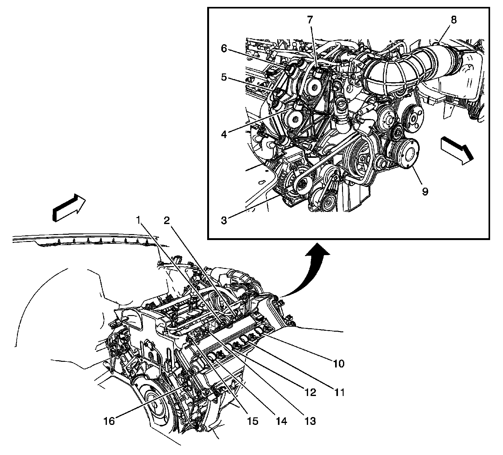
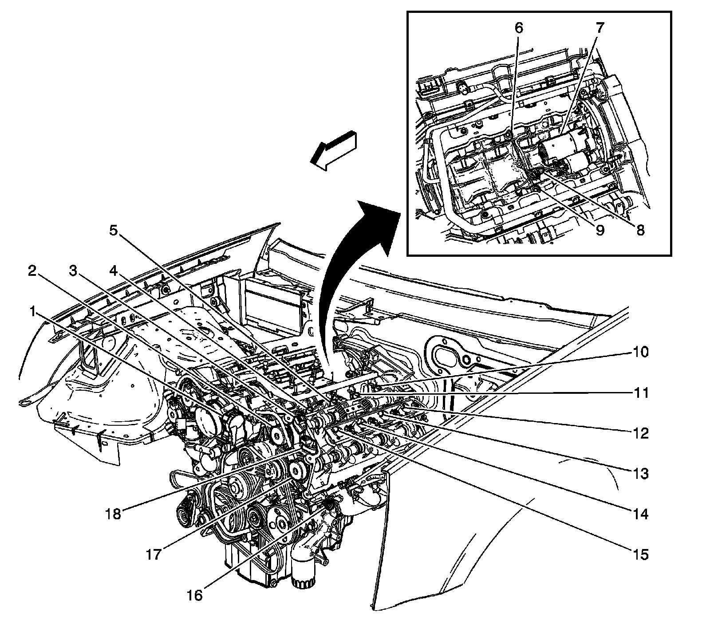

Engine Block Heater: Locations
Powertrain Component Views
Engine Components 1 of 2 (LH2 - Gas, 8 Cylinder, 4.6L, SFI, V8, DOHC, HO)

1 - Fuel Injector 3
2 - Fuel Injector 1
3 - Generator
4 - Camshaft Position (CMP) Actuator Solenoid - Exhaust Bank 1 (LH2 - Gas, 8 Cylinder, 4.6L, SFI, V8, DOHC, HO)
5 - Camshaft Position (CMP) Sensor - Exhaust Bank 1 (LH2 - Gas, 8 Cylinder, 4.6L, SFI, V8, DOHC, HO)
6 - Camshaft Position (CMP) Sensor - Intake Bank 1 (LH2 - Gas, 8 Cylinder, 4.6L, SFI, V8, DOHC, HO)
7 - Camshaft Position (CMP) Actuator Solenoid - Intake Bank 1 (LH2 - Gas, 8 Cylinder, 4.6L, SFI, V8, DOHC, HO)
8 - Mass Air Flow (MAF) Sensor (LH2 - Gas, 8 Cylinder, 4.6L, SFI, V8, DOHC, HO)
9 - A/C Compressor
10 - Ignition Module 1
11 - Ignition Module 3
12 - Ignition Module 5
13 - Fuel Injector 5
14 - Ignition Module 7
15 - Fuel Injector 7
16 - Engine Coolant Temperature (ECT) Sensor
Engine Components 2 of 2 (LH2 - Gas, 8 Cylinder, 4.6L, SFI, V8, DOHC, HO)

1 - Throttle Actuator Control (TAC) Module (LH2 - Gas, 8 Cylinder, 4.6L, SFI, V8, DOHC, HO)
2 - Camshaft Position (CMP) Actuator Solenoid - Intake Bank 2 (LH2 - Gas, 8 Cylinder, 4.6L, SFI, V8, DOHC, HO)
3 - Camshaft Position (CMP) Sensor - Intake Bank 2 (LH2 - Gas, 8 Cylinder, 4.6L, SFI, V8, DOHC, HO)
4 - Fuel Injector 2
5 - Fuel Injector 4
6 - Knock Sensor (KS) - Bank 1
7 - Starter
8 - Crankshaft Position (CKP) Sensor (LH2 - Gas, 8 Cylinder, 4.6L, SFI, V8, DOHC, HO)
9 - Knock Sensor (KS)-Bank 2
10 - Fuel Injector 8
11 - Fuel Injector 6
12 - Ignition Coil/Module 8 (LH2 - Gas, 8 Cylinder, 4.6L, SFI, V8, DOHC, HO)
13 - Ignition Coil/Module 6 (LH2 - Gas, 8 Cylinder, 4.6L, SFI, V8, DOHC, HO)
14 - Ignition Coil/Module 4 (LH2 - Gas, 8 Cylinder, 4.6L, SFI, V8, DOHC, HO)
15 - Ignition Coil/Module 8 (LH2 - Gas, 8 Cylinder, 4.6L, SFI, V8, DOHC, HO)
16 - Engine Oil Pressure (EOP) Sensor (LH2 - Gas, 8 Cylinder, 4.6L, SFI, V8, DOHC, HO)
17 - Camshaft Position (CMP) Actuator Solenoid - Exhaust Bank 2 (LH2 - Gas, 8 Cylinder, 4.6L, SFI, V8, DOHC, HO)
18 - Camshaft Position (CMP) Sensor - Exhaust Bank 2 (LH2 - Gas, 8 Cylinder, 4.6L, SFI, V8, DOHC, HO)